Datensätze bändigen & visualisieren mit R
Benedikt Philipp Kleer
11. Oktober 2021
Weiterführende Darstellungen in ggplot2
In diesem Teil des Kurses werden weiterführende Einstellungen innerhalb des Pakets ggplot2 dargestellt. Aufbauend auf die Einführung in die Grammatik von ggplot werden folgende Teile dargestellt:
Schriftarten bearbeiten bzw. Darstellung des Plots
Anmerkungen im Plot
missing values darstellen
Marginal Plots / Regressionsplots
Karten bearbeiten
Eine gute Übersicht bietet auch folgendes Online-Lernbuch (auf Englisch).
Weitere Layout-Fragen
Innerhalb eines ggplots können nahezu alle dargestellten Teilbereiche verändert und angepasst werden. Einige dieser Änderungen werden wie im nachfolgenden besprechen.
Dazu schaffen wir uns zuerst nochmal ein ggplot-Objekt mit unserem Scatterplot aus der Einführung in ggplot:
scatter <- ggplot(pss,
aes(stfeco,
stfdem)) +
geom_jitter(alpha = .2,
col = "blue") +
scale_x_continuous(breaks = seq(0, 10, 1)) +
scale_y_continuous(breaks = seq(0, 10, 1))
scatter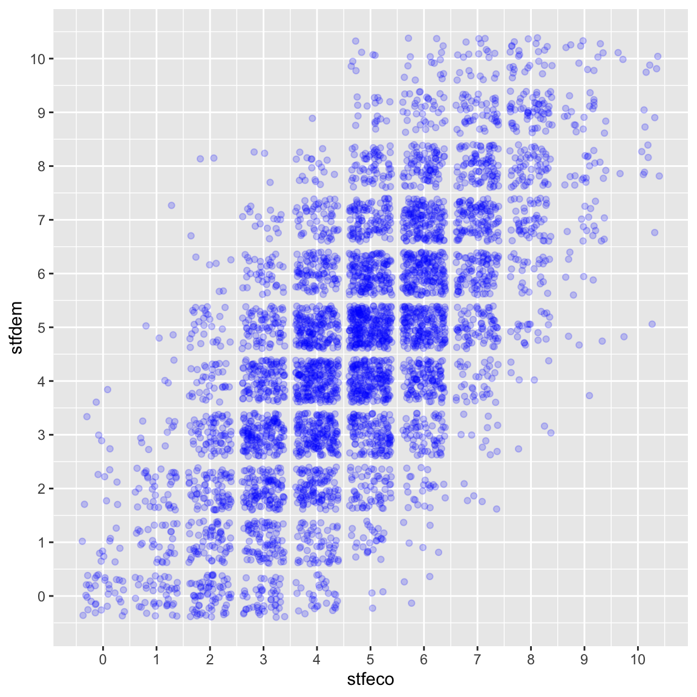
Zuerst fügen wir nochmals Titel, Achsenbeschriftung und Quellen hinzu.
scatterLeg <- scatter +
labs(x = "Satisfaction with Economy",
y = "Satisfaction with Democracy",
title = "Correlation Plot",
caption = "Data: Panem Social Survey.\n Data jittered.")
scatterLeg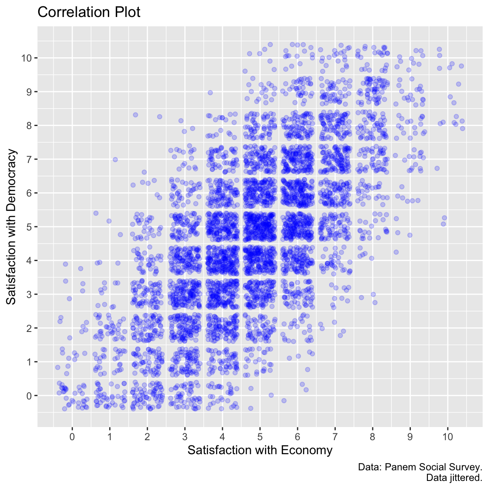
Innerhalb der Funktion theme() können wir Teilbereiche des Plots ansprechen und ändern. Dies umfasst u.a. folgende Eigenschaften des Plots:
- plot.title
- axis.title.x / axis.title.y
- axis.text.x / axis.text.y
- panel.grid / panel.grid.minor / panel.grid.major
- plot.background / panel.background
Eine komplette Übersicht aller Einstellungen die in theme() genutzt werden können findet sich in der User-Dokumentation.
Wir werden jetzt nach und nach Veränderungen vornehmen. Zuerst werden wir die Schriftgröße, Position und das Erscheinungsbild des Titels ändern. Dies machen wir über plot.title in theme(). Dazu verwenden wir die Funktion element_text():
scatterLeg +
theme(plot.title = element_text(size = 25,
face = "italic",
hjust = 0.5))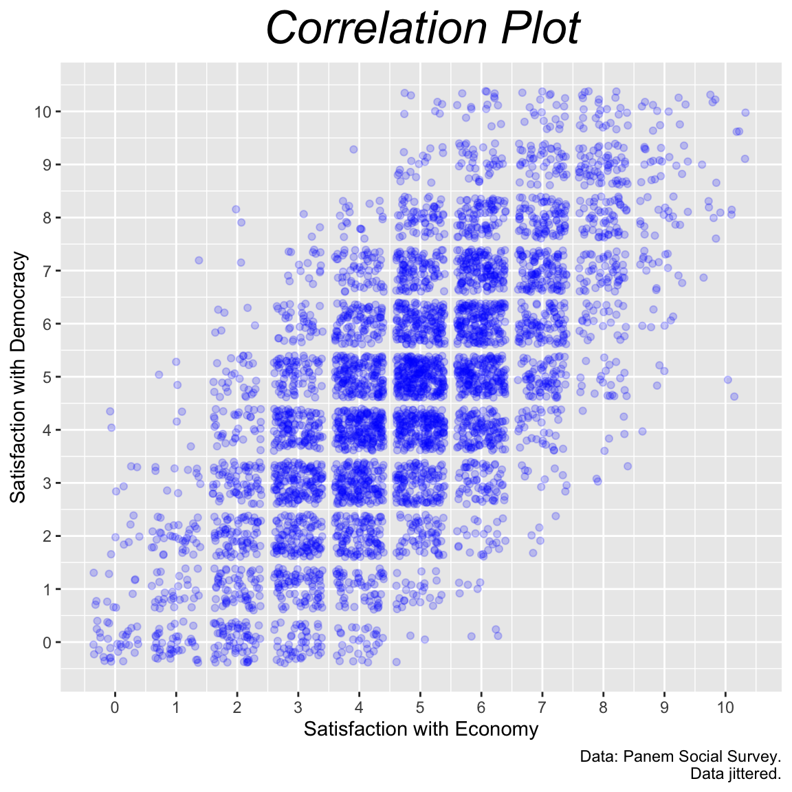
Dazu haben wir die drei Argumente size (Schriftgröße), face (Erscheinungsbild) und hjust (Position) genutzt.
Als nächstes wollen wir die Achsentitel bearbeiten.
scatterAxes <- scatterLeg +
theme(plot.title = element_text(size = 25,
face = "italic",
hjust = 0.5),
axis.title.x = element_text(size = 16,
color = "seagreen",
hjust = 0),
axis.title.y = element_text(size = 8,
color = rgb(0, 105, 179, maxColorValue = 255),
hjust = 1,
face = "bold")
)
scatterAxes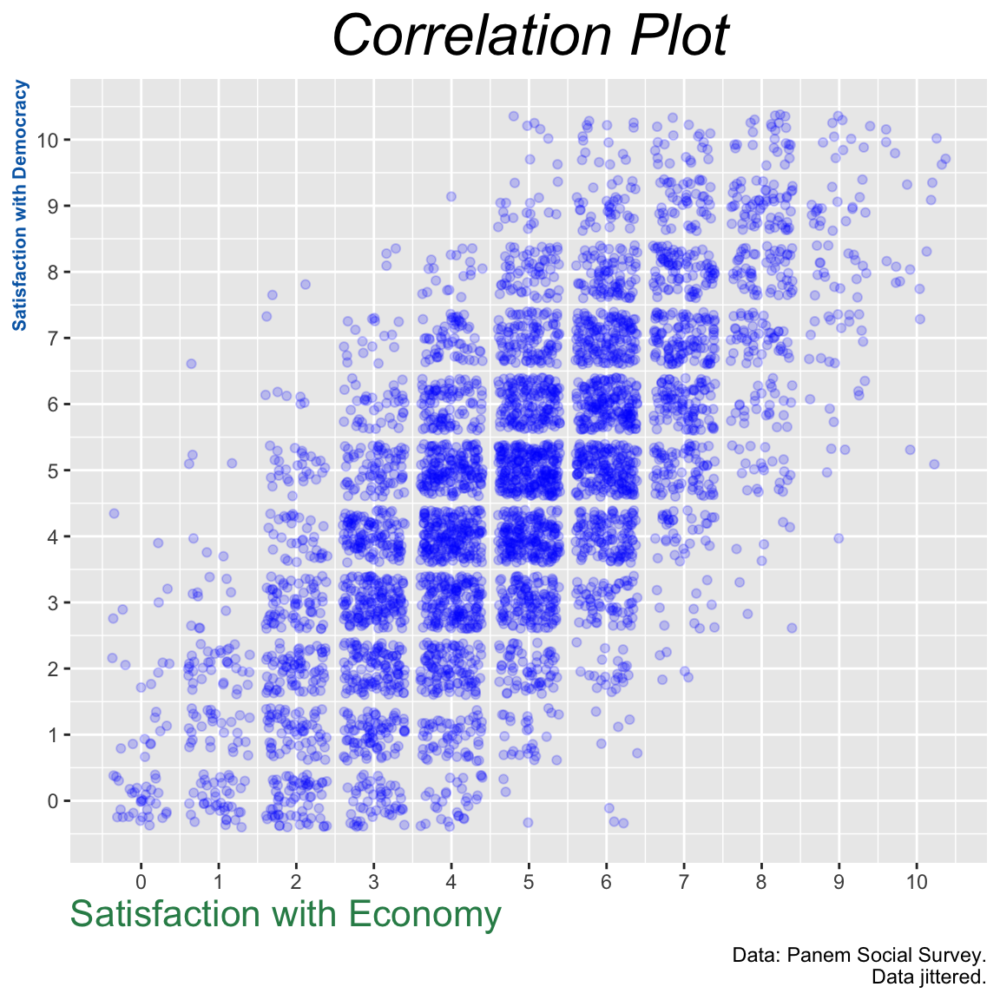
Anstatt eine Farbe anzugeben, kann man mit der Funktionrgb() auch den Farbton bestimmen. Alternativ kann man auch den HTML-Code der Farbe innerhalb des Arguments color nutzen.
scatterLeg +
theme(plot.title = element_text(size = 25,
face = "italic",
hjust = 0.5),
axis.title.x = element_text(size = 16,
color = "seagreen",
hjust = 0),
axis.title.y = element_text(size = 8,
color = "#0069B3",
hjust = 1,
face = "bold")
)Nun möchten wir weiter experimentieren und die Achsenticks bearbeiten. Dazu nutzen wir axis.ticks.x bzw. axis.ticks.y.
scatterTicks <- scatterAxes +
theme(axis.text.x = element_text(size = 12,
angle = 45,
color = "darkgrey"),
axis.text.y = element_text(size = 11,
hjust = 0,
vjust = 1))
scatterTicks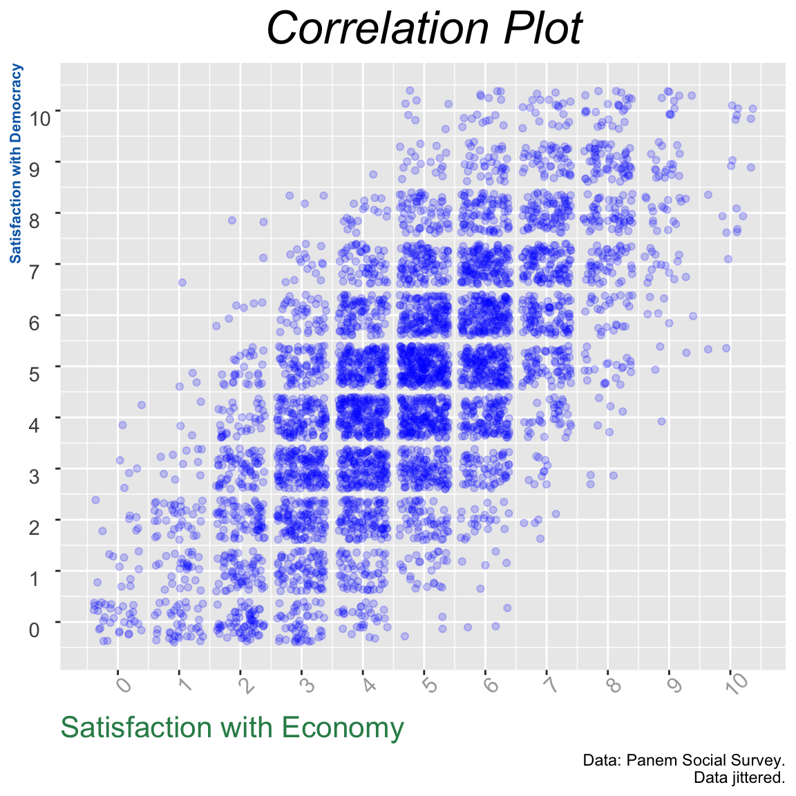
Mit dem Argument angle können wir die Achsenbeschriftungen drehen lassen. Mit hjust und vjust können wir die Startposition des Texts ändern.
Als nächstes möchten wir das Grid des Plots ändern, also die Linien. Dazu nutzen wir erstmal das Argument panel.grid und innerhalb des Arguments die Funktion element_line()
scatterGrid <- scatterTicks +
theme(panel.grid = element_line(color = "green",
size = 1,
linetype = "solid") # blank, solid, dashed, dotted, dotdash, longdash, twodash
)
scatterGrid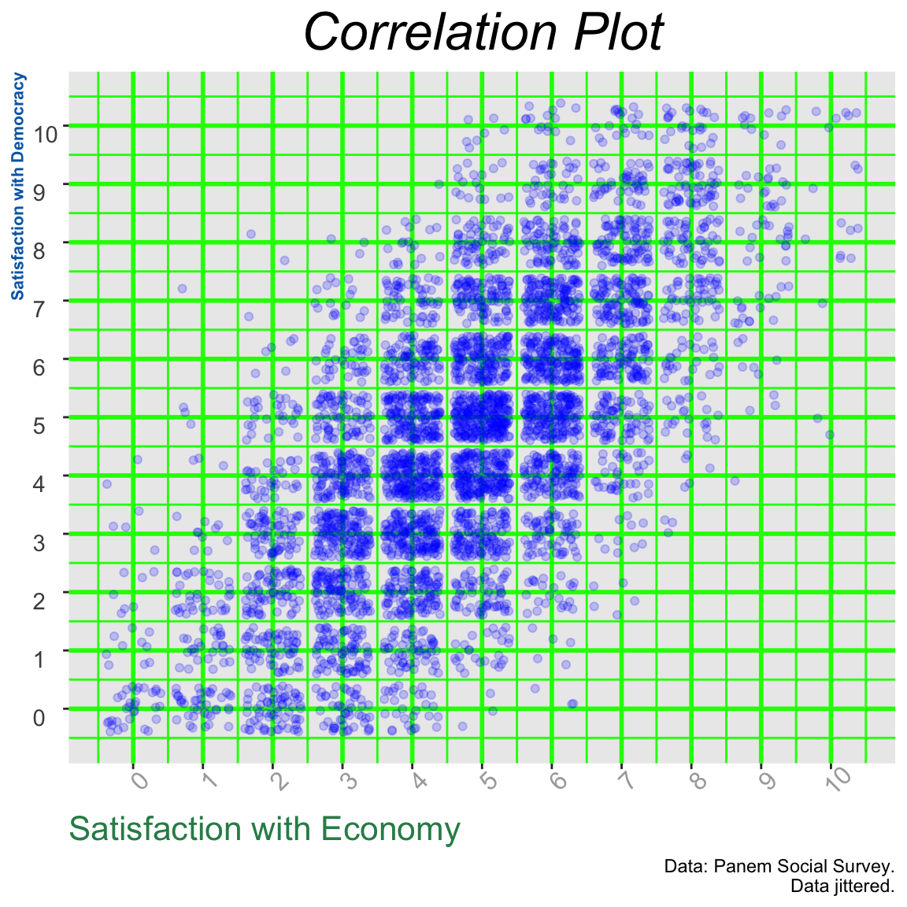
Mit den Argumenten panel.grid.major und panel.grid.minor können die Haupt- und Hilfslinien getrennt bearbeitet werden. Wenn wir zum Beispiel nur die Hauptlinien wollen, machen wir folgendes:
scatterGrid <- scatterTicks +
theme(panel.grid.major = element_line(color = "green",
size = 1,
linetype = "solid"), # blank, solid, dashed, dotted, dotdash, longdash, twodash
panel.grid.minor = element_blank()
)
scatterGrid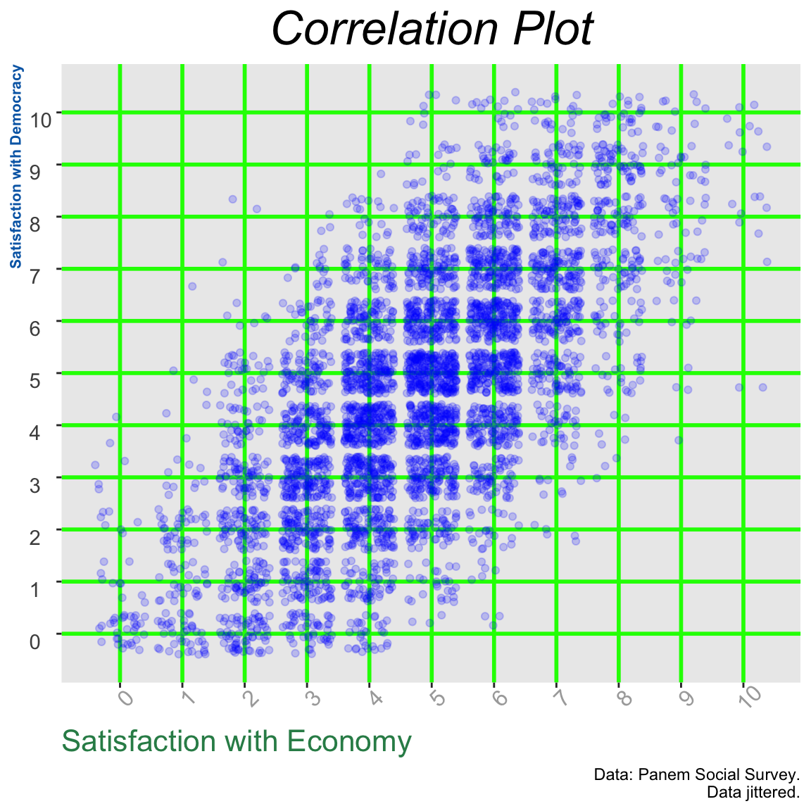
Man kann auch die Hilfslinien getrennt nach Achsen bearbeiten. Dazu muss man einfach jeweils .x bzw. .y beifügen.
Zuletzt kann man noch den Hintergrund des Plots bzw. des Panels ändern. Dies geschieht über die Argumente plot.background bzw. panel.background. Dazu nutzt man die Funktion element_rect() innerhalb des Arguments
scatterGrid +
theme(plot.background = element_rect(color ="darkgray",
size = 2,
fill = "lightpink"),
panel.background = element_rect(fill = "moccasin")
)
Es gibt ebenso eine ganze Reihe an vorgefertigten Themes, die dann wiederum individuell angepasst werden können. Eine Übersicht über vorhandene Themes gibt es hier.
Annotations
Neben den ganzen Spielereien möchte man manchmal auch einzelne Bereiche einer Grafik besonders hervorheben oder aber zum Beispiel Beschriftungen der Fälle hinzufügen (bei kleinem n).
Hierzu gibt es die Funktionen geom_text() und annotate(), die mit ggplot genutzt werden können. Dazu nehmen wir wieder das Scatterplot vom Beginn, begrenzen aber diesmal die Anzahl auf 15, damit wir eine klare Darstellung bekommen. Wichtig: geom_jitter() kann nicht genutzt werden, da die Datenbeschriftungen am Datenpunkt und nicht am gejitterten Datenpunkt auftauchen!
scatter2 <- ggplot(pss[1:15,],
aes(stfeco,
stfdem)) +
geom_point(col = "blue") +
scale_x_continuous(breaks = seq(0, 10, 1)) +
scale_y_continuous(breaks = seq(0, 10, 1))
scatter2 Mit der Funktion
Mit der Funktion geom_text() kann man den Datenpunkten-Beschriftungen hinzufügen. So zum Beispiel die Zeilennummer oder die ID-Variable. Wir machen letzteres, da sich die Zeilennummer bei Sortierungen ändern kann und somit nicht eindeutig ist. Daher fügen wir jetzt mit der Funktion in aes ein label hinzu (idno).
scatter2 +
geom_text(aes(label = idno))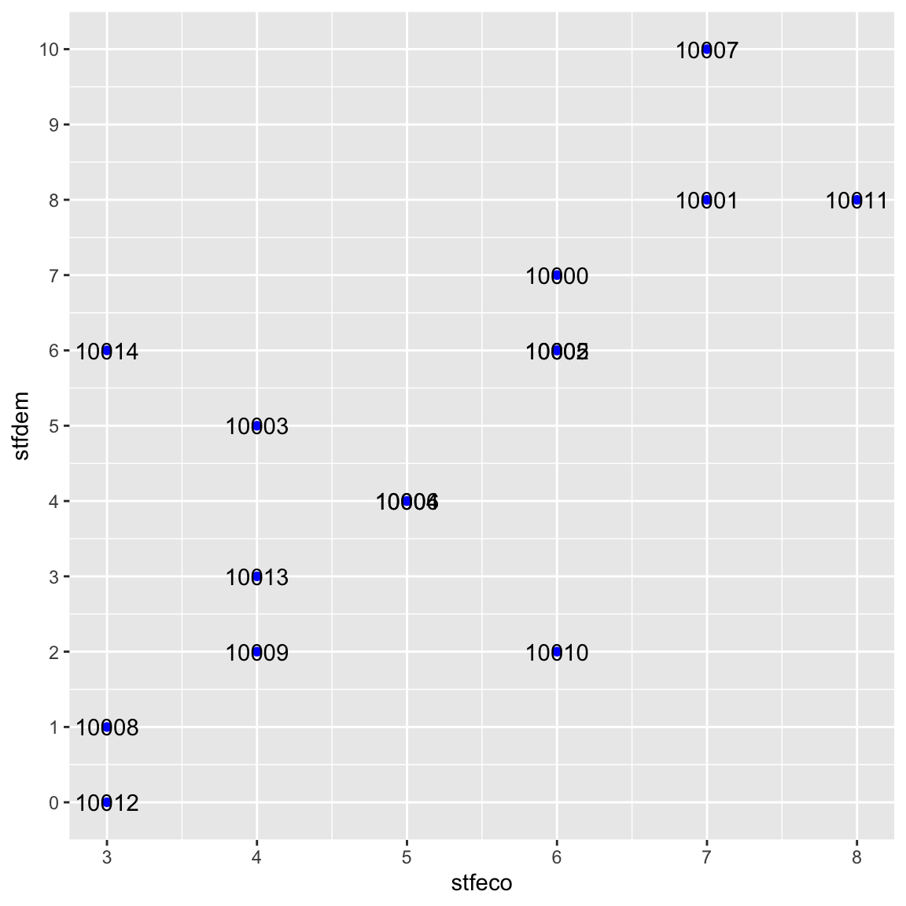 Innerhalb von geom_text() kann man nun weitere Einstellungen vornehmen. Ein paar davon kennen wir schon, zwei weitere wichtige sind nudge_y und nudge_x, die den Schriftstart auf der jeweiligen Achse verschieben.
scatter2 +
geom_text(aes(label = idno),
size = 2,
nudge_y = -.15)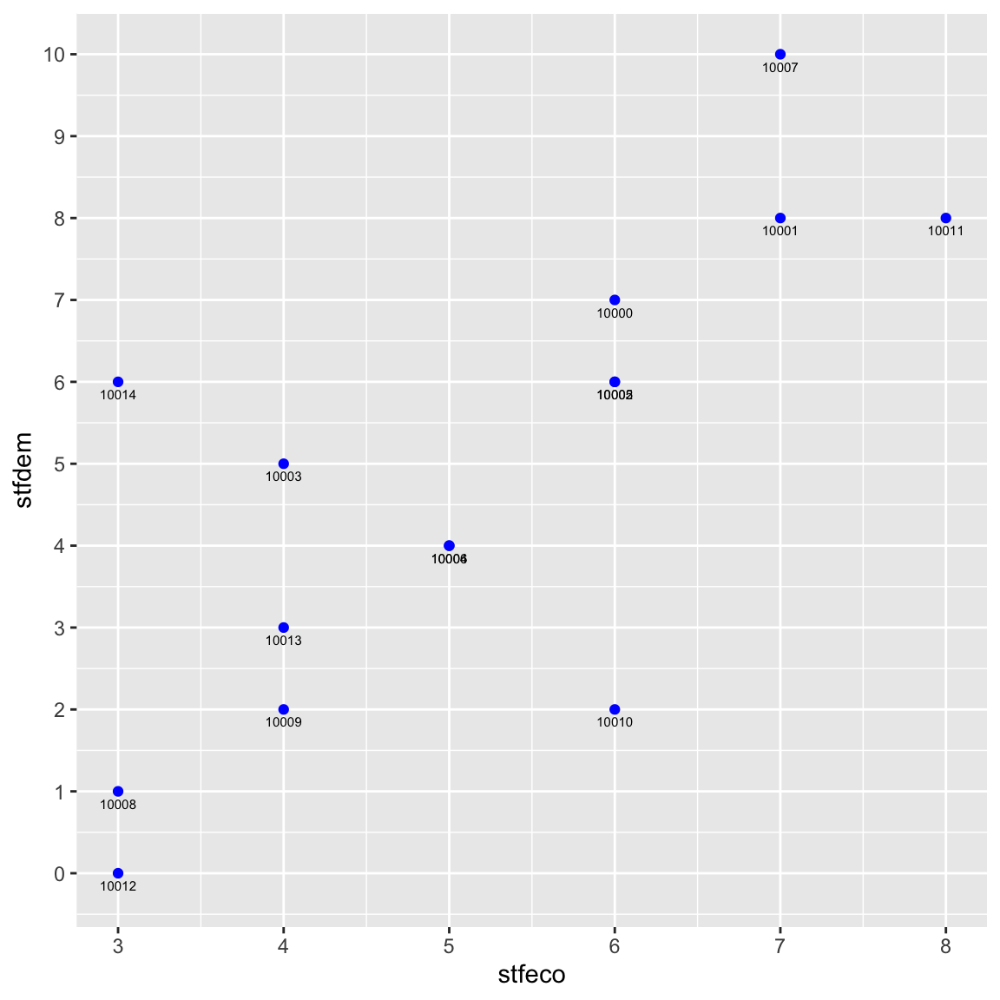
Wenn man nun trotzdem alle Datenpunkte abbilden möchte und nur spezifische Datenpunkte hervorheben möchte, ist dies ganz leicht möglich: Wir möchten nur die ersten zehn Fälle anzeigen und begrenzen daher die Daten in geom_text(). Dies ist auch über subset() mit mehreren Verknüpfungen möglich.
ggplot(pss,
aes(stfeco,
stfdem)) +
geom_point(alpha = .2,
col = "blue") +
scale_x_continuous(breaks = seq(0, 10, 1)) +
scale_y_continuous(breaks = seq(0, 10, 1)) +
geom_text(aes(label = idno),
data = pss[1:10,])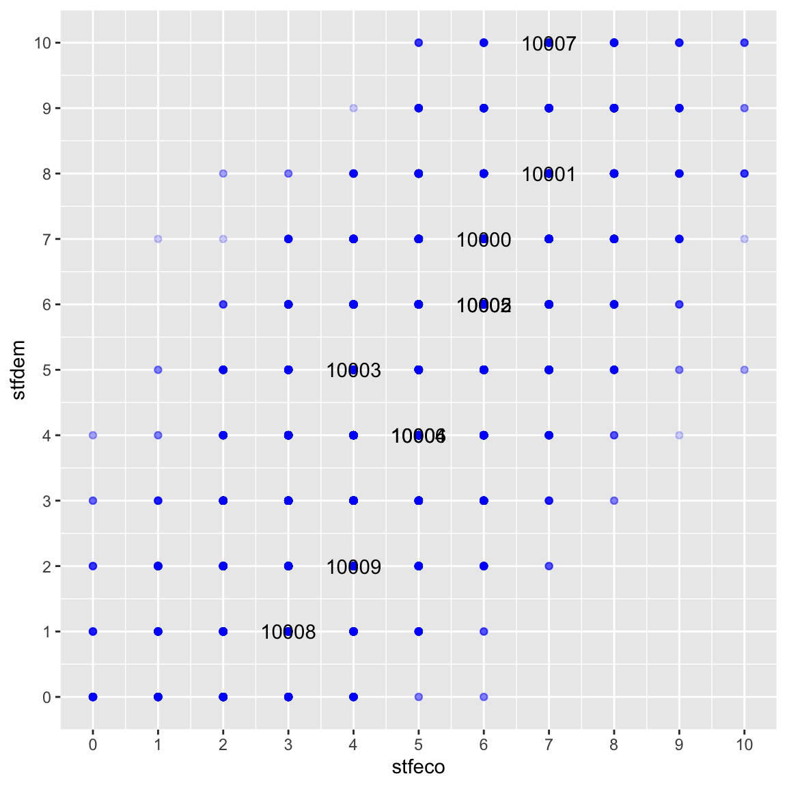
Weitaus größere Möglichkeiten bietet annotate(). Mit dieser können nicht nur Beschriftungen, sondern auch bestimmte Bereiche innerhalb eines Plots hervorgehoben werden. Nehmen wir wieder das gejitterte Plot und markieren einen bestimmten Bereich im Plot:
scatter +
annotate("rect",
xmin = 8.5, # this corresponds to the axis scale!
xmax = 9.5,
ymin = 8.5,
ymax = 10.5,
colour = "darkgreen",
fill = "lightgreen")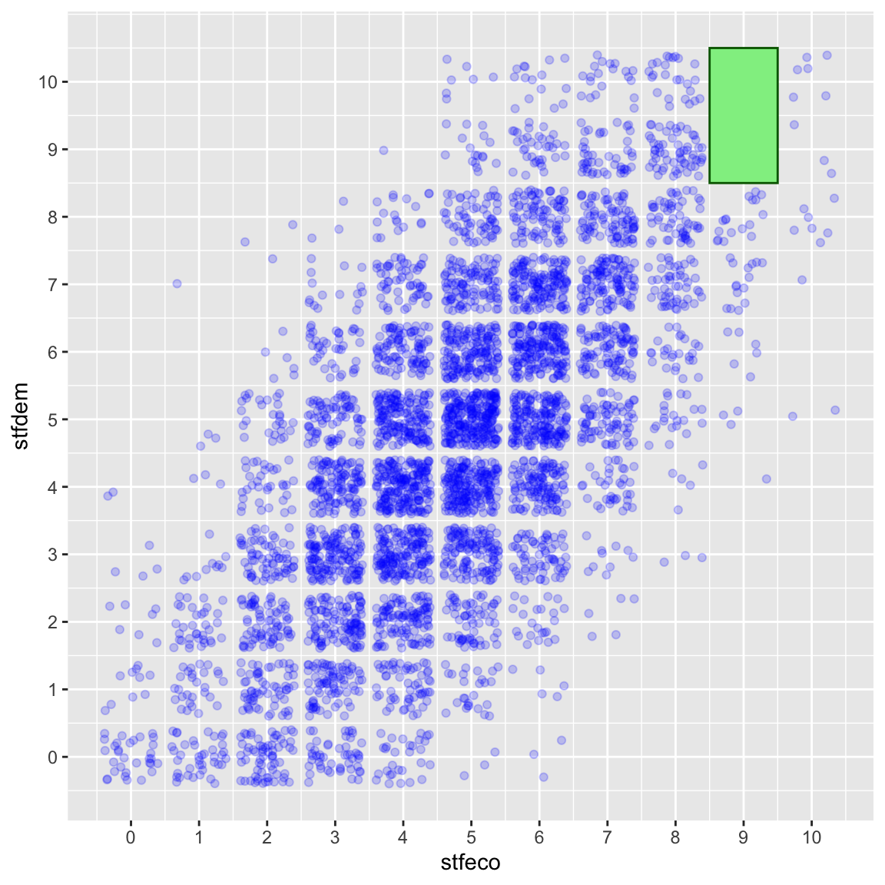
Der Nachteil wird direkt ersichtlich! Da ggplot über Layer angesprochen wird, muss der annotate()-Layer vor dem geom_jitter()-Layer stehen. Oder wir fügen alpha hinzu, um die Sichtbarkeit zu verändrn:
scatter +
annotate("rect",
xmin = 8.5, # this corresponds to the axis scale!
xmax = 9.5,
ymin = 8.5,
ymax = 10.5,
colour = "darkgreen",
fill = "lightgreen",
alpha = .1)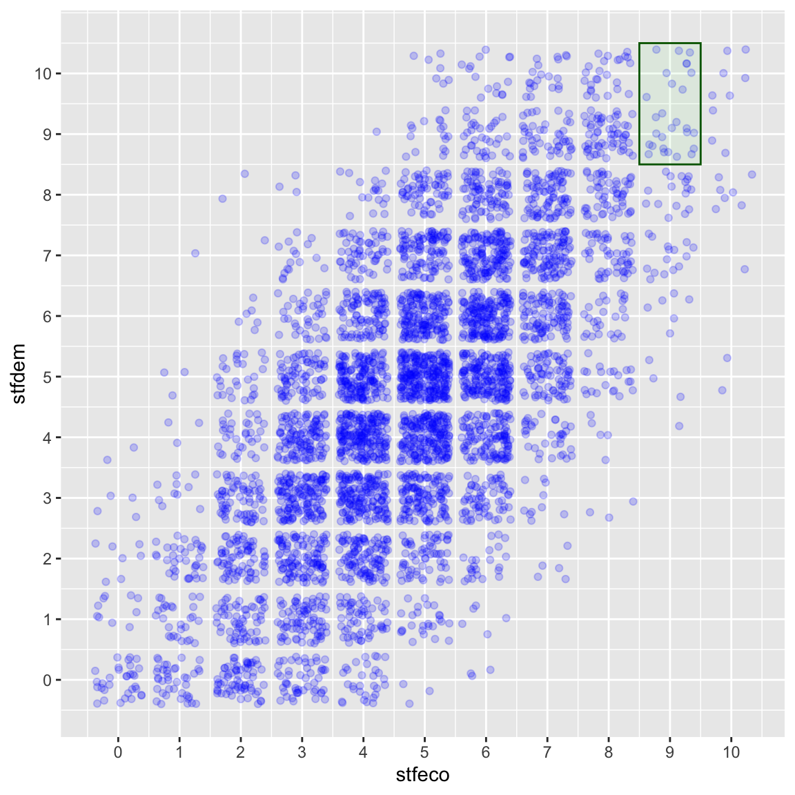 Jetzt möchten wir in der Grafik noch eine Beschriftung hinzufügen, damit der Leser:in klar wird, welchen Bereich wir hier markiert haben:
scatter +
annotate("rect",
xmin = 8.5,
xmax = 9.5,
ymin = 8.5,
ymax = 10.5,
colour = "darkgreen",
fill = "lightgreen",
alpha = .1) +
annotate("text",
x = 1,
y = 9,
label = "highlighted area", # with \n you get a new line
colour = "darkgreen") 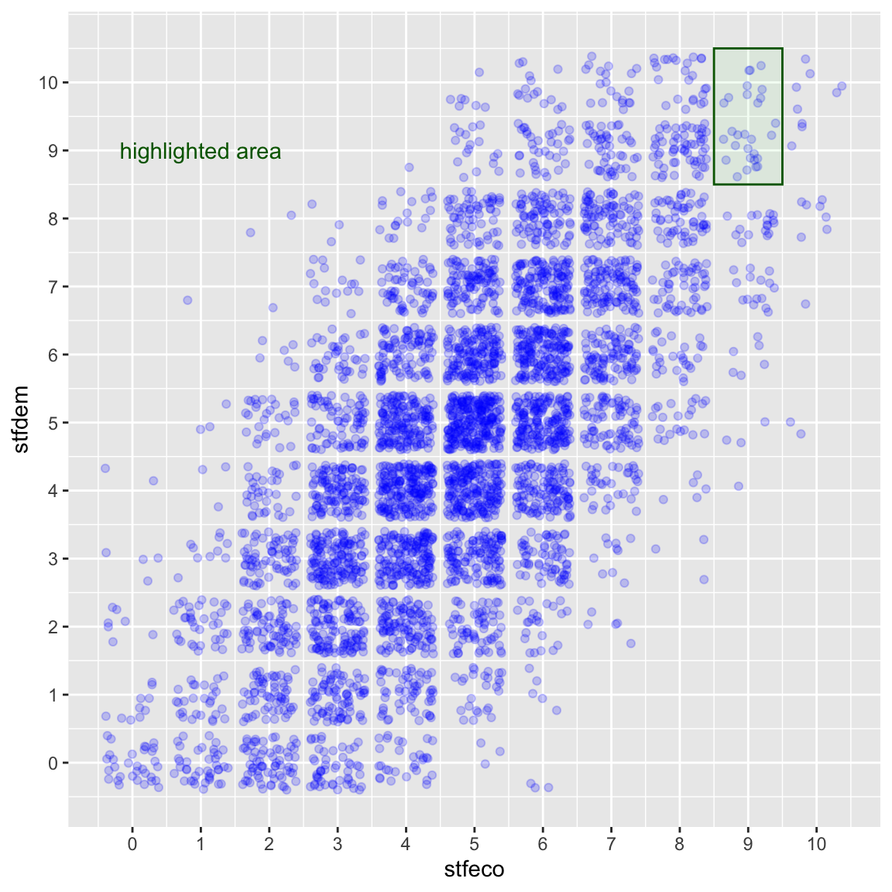 Als weitere Möglichkeit bietet annotate() die Möglichkeit Linien zu erstellen, so dass wir unseren Text auf das Feld zeigen lassen können:
scatter +
annotate("rect",
xmin = 8.5,
xmax = 9.5,
ymin = 8.5,
ymax = 10.5,
colour = "darkgreen",
fill = "lightgreen",
alpha = .1) +
annotate("text",
x = 1,
y = 9,
label = "highlighted area", # with \n you get a new line
color = "darkgreen") +
annotate("segment",
x = 2,
xend = 8.5,
y = 9,
yend = 9,
color = "darkgreen",
arrow = arrow())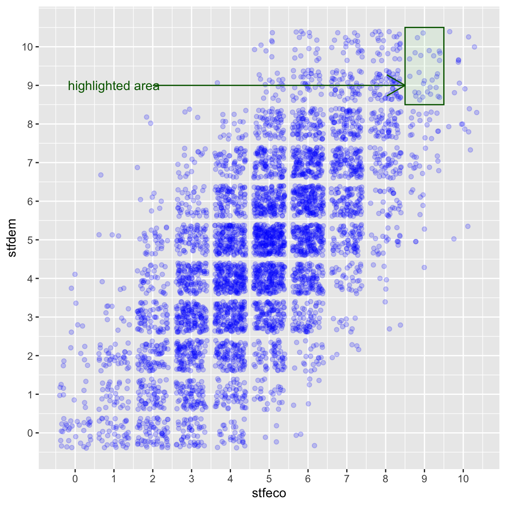
Grafikpakete zur Darstellung von missing values
Oftmals möchte man bevor man die eigentliche Datenanalyse beginnt, zuerst die Daten inspizieren und vor allem die missing values prüfen. Dazu gibt es zwei umfangreiche Pakete, die auf ggplot2 aufbauen. Dies sind: naniar und UpSetR.
Zuerst installieren bzw. laden wir die Pakete:
install.packages("UpSetR")
install.packages("naniar")
library("UpSetR")
library("naniar")Wir benutzen nun den Datensatz uniMis, in dem zufällig missings in den Variablen mot, term, distance und abi hinzugefügt wurde. Der Datenatz ist sonst gleich mit dem Datensatz uni.
uniMis Zuerst wollen wir nun die missings pro Variable darstellen. Dazu filtern wir zuerst den Datensatz auf die ID-Variable und die vier Variablen mit missings. Anschließend bringen wir den Datensatz in ein long-Format und schaffen eine dann dritte Spaltel, die angibt, ob es ein missing-Wert ist oder nicht. Dann gruppieren wir nach Variablen und der neuen ditten Spalte und zählen die missings pro Variable (bzw. auch die nicht-missings). Danach schließen wir die nicht-missings aus und sortieren die Tabelle absteigend. Wir sehen dann, wie viele missings in jeder der vier Variablen vorhanden ist.
missingValues <- uniMis %>%
select(c(1:5)) %>%
pivot_longer(everything(),
names_to = "variable",
values_to = "val") %>%
mutate(is.missing = is.na(val)) %>%
group_by(variable,
is.missing) %>%
summarize(num.missing = n()) %>%
filter(is.missing == TRUE) %>%
select(-is.missing) %>%
arrange(desc(num.missing))
missingValuesAnschließend kann man sich ein einfaches Balkendiagramm ausgeben lassen mit diesem neuen Datensatz:
missingValues %>%
ggplot() +
geom_bar(aes(variable,
num.missing),
stat = 'identity') +
labs(x = 'Variable',
y = "Anzahl MV",
title = 'Missing Values pro Variable') +
theme(axis.text.x = element_text(angle = 45,
hjust = 1))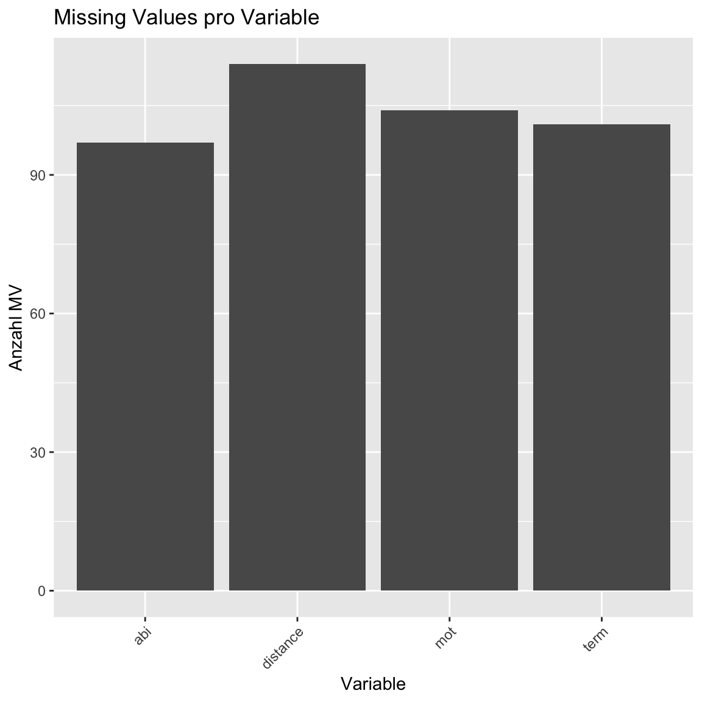
Hier kann man alle Spielereien von oben austesten. Wir wollen aber jetzt Prozente ausgeben, um zu sehen, wie viel Prozent der Variable missings sind. Dazu wiederholen wir die Schritte von zuvor, fügen aber einen mutate-Schritt ein, der uns die Prozent angibt.
#Prozente
missingValues <- uniMis %>%
select(c(1:4)) %>%
pivot_longer(everything(),
names_to = "key",
values_to = "val") %>%
mutate(isna = is.na(val)) %>%
group_by(key) %>%
mutate(total = n()) %>%
group_by(key,
total,
isna) %>%
summarise(num.isna = n()) %>%
mutate(pct = num.isna / total * 100)
levels <- (missingValues %>%
filter(isna == T) %>%
arrange(desc(pct)))$key
percentage.plot <- missingValues %>%
ggplot() +
geom_bar(aes(x = reorder(key,
desc(pct)),
y = pct,
fill = isna),
stat = 'identity',
alpha = 0.8) +
scale_x_discrete(limits = levels) +
scale_fill_manual(name = "",
values = c('steelblue', 'tomato3'),
labels = c("vorhanden", "fehlend")) +
coord_flip() +
labs(title = "Prozent von missing values",
x = 'Variable',
y = "% missing values")
percentage.plot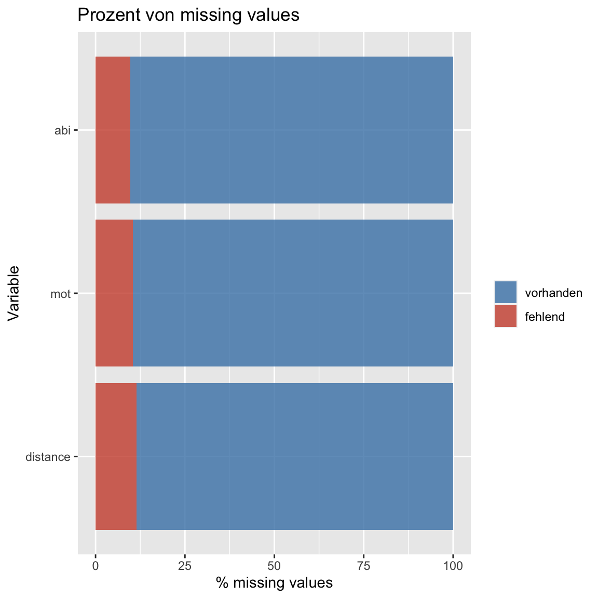
Alternativ kann man auch die missings so anzeigen, dass sichtbar wird, welcher Fall auf welcher Variable missing ist. Bei großen Datensätzen wird das aber schnell unübersichtlich.
# pro Fall (wird aber bei großen Datensätzen etwas schwer zu lesen)
row.plot <- uniMis %>%
select(c(1:4)) %>%
pivot_longer(-c("ID"),
names_to = "key",
values_to = "val") %>%
mutate(isna = is.na(val)) %>%
ggplot(aes(key,
ID,
fill = isna)) +
geom_raster(alpha = 0.8) +
scale_fill_manual(name = "",
values = c('steelblue', 'tomato3'),
labels = c("vorhanden", "fehlend")) +
scale_x_discrete(limits = levels) +
labs(x = "Variable",
y = "Row Number",
title = "Missing values in rows") +
coord_flip()
row.plot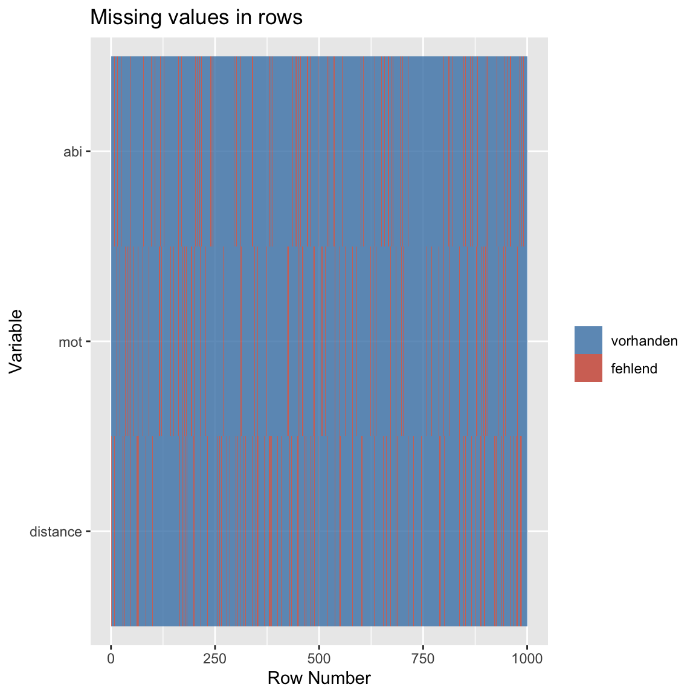
Missing values mit naniar & UpSetR
Mit dem Paket naniar sind die oben dargestellten Schritte viel schneller und leichter darzustellen. Das Paket schafft dabei auch immer einen ggplot, so dass die oben gelernten Anpassungen auch hier möglich sind. Zuerst nutzen wir Funktionen, um uns Tabellen mithilfe von naniar ausgeben zu lassen. Die erste ist die Funktion miss_var_summary(), die uns die absolute und relative Häufigkeit von missings in den Variablen ausgibt.
uniMis %>%
miss_var_summary()Dies können wir auch gruppieren:
uniMis %>%
group_by(city) %>%
miss_var_summary()Zuerst können wir uns eine Verteilung der missings im Datensatz ausgeben lassen. Die Funktion gg_miss_var_cumsum() gibt uns die kumulierte Summe der missings pro Variable aus. Hieran kann man also ablesen, wie sich die missings auf die Variablen verteilen.
gg_miss_var_cumsum(uniMis)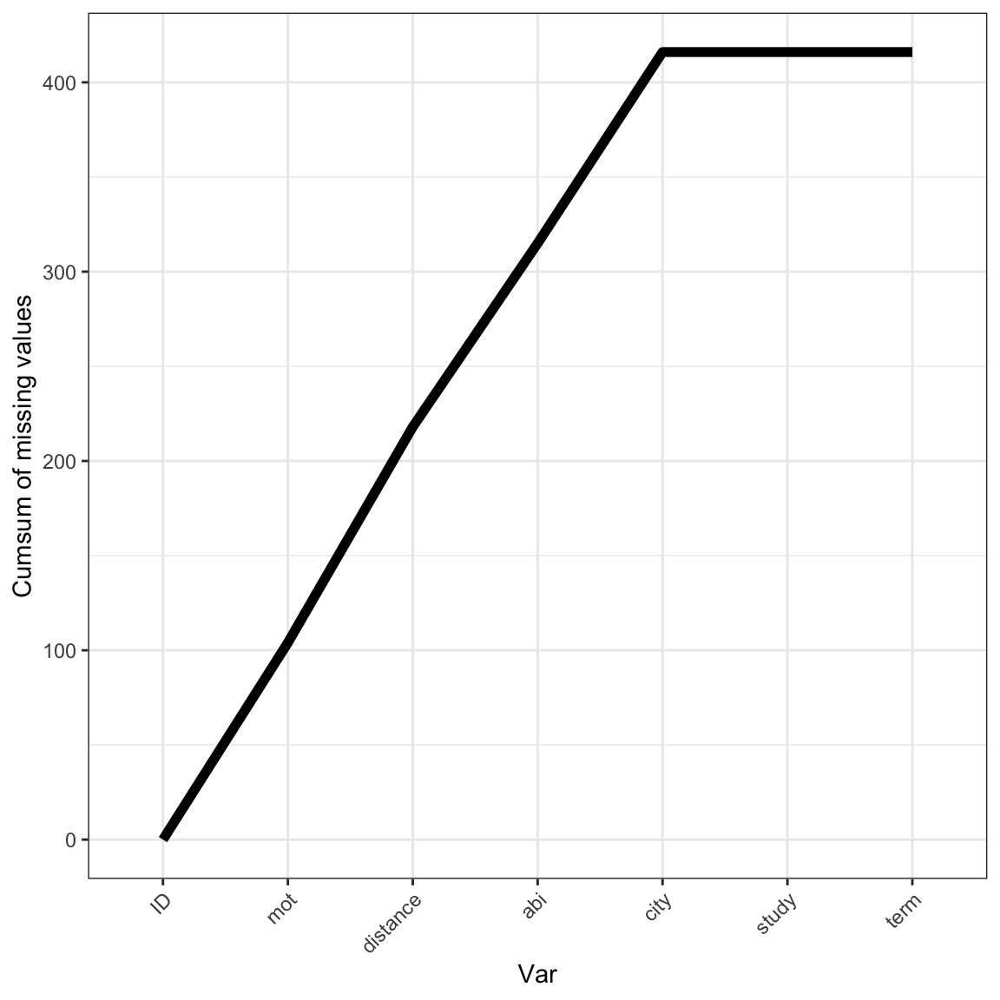
Die Funktion vis_miss() visualisiert die missings eines gesamten Datensatzes (außer wir grenzen ein).
vis_miss(uniMis)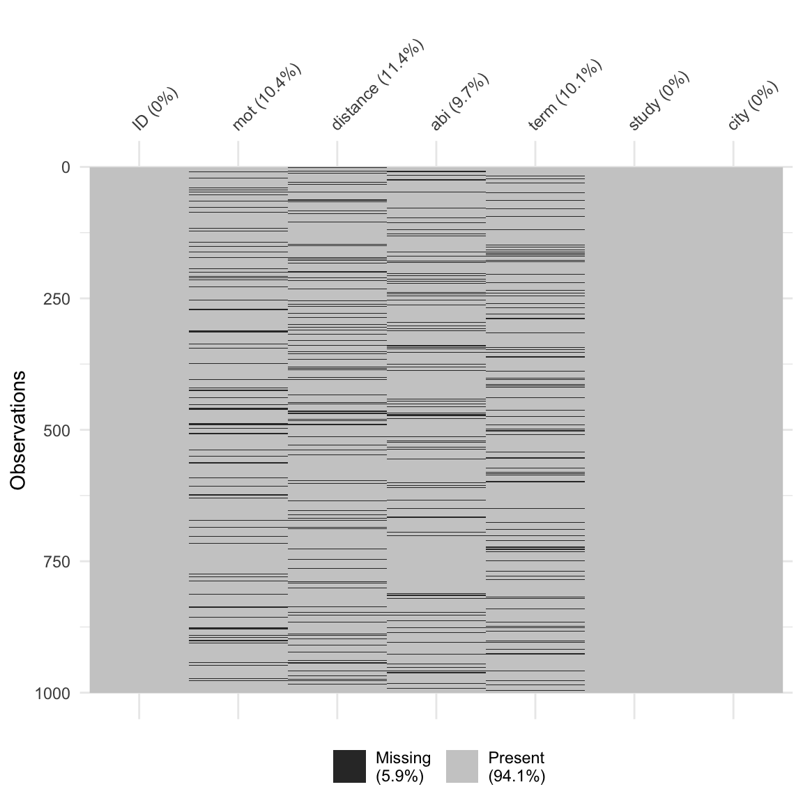
Eine weitere ansprechende Alternative ist die Funktion gg_miss_upset() aus dem Paket naniar. Hierbei werden auch die Häufigkeiten der Kombination der missings zwischen den Variablen angezeigt. Aber auch dies wird bei allzu großen Datensätzen schnell unübersichtlich. Für Teilbereich kann das aber aufschlussreich sein (z.B. wenn man prüfen möchte, ob Personen nur Teile einer Itembatterie oder die Itembatterie komplett nicht beantwortet haben).
gg_miss_upset(uniMis)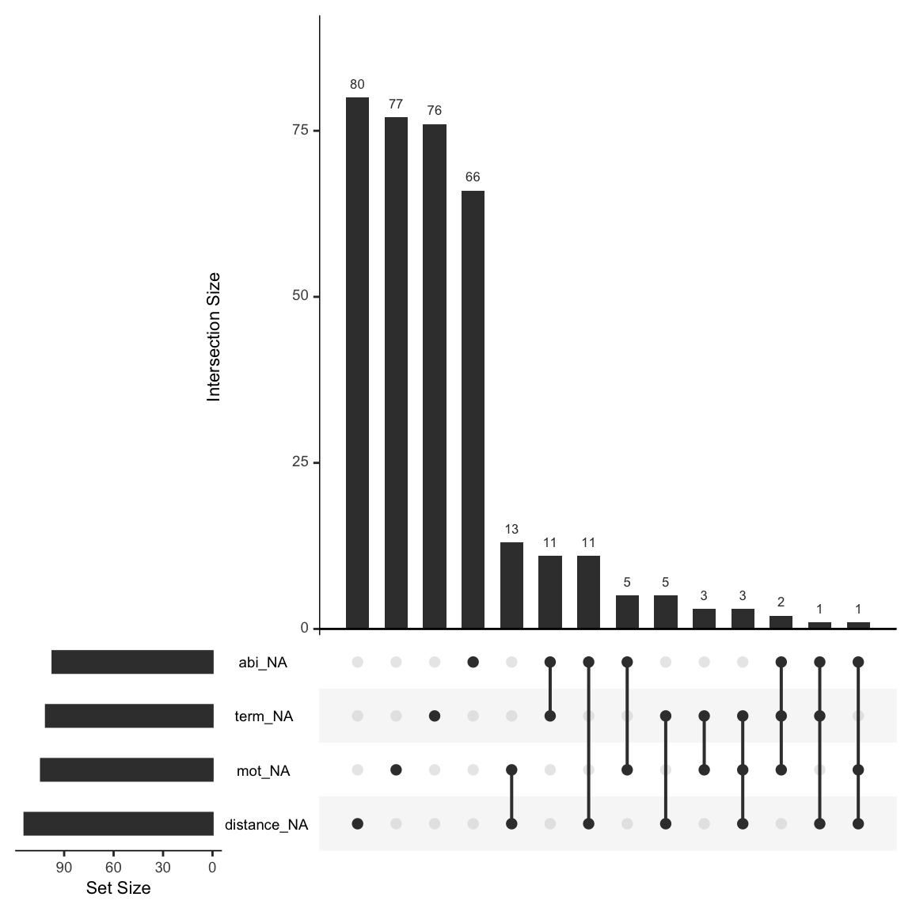
In der Grafik sieht man, dass die vier Variablen abi, term, mot und distance NA's haben. Insgesamt gibt es folgende Kombinationen:
- 80 Fälle, die in
distanceNAhaben, - 77 Fälle, die in
motNAhaben, - 76 Fälle, die in
termNAhaben, - 66 Fälle, die in
abiNAhaben, - 13 Fälle, die in
motunddistanceNAhaben, - 11 Fälle, die in
abiundtermNAhaben, - 11 Fälle, die in
abiunddistanceNAhaben, - 5 Fälle, die in
abiundmotNAhaben, - 5 Fälle, die in
termunddistanceNAhaben, - 3 Fälle, die in
termundmotNAhaben, - 3 Fälle, die in
term,motunddistanceNAhaben, - 2 Fälle, die in
abi,termundmotNAhaben, - 1 Fall, der in
abi,termunddistanceNAhat, - 1 Fall, der in
abi,motunddistanceNAhat.
Insgesamt gilt, dass die maximale Anzahl an Kombinationen wie folgt berechnet wird: \(2^{Anzahl Variabl} - 1\). In diesem Fall wären es 15 mögliche Kombinationen, angezeigt werden aber nur 14. Warum?
Daneben können missings auch über die Funktion geom_miss_point() ganz leicht in einem ggplot dargestellt werden:
ggplot(uniMis,
aes(x = mot,
y = abi)) +
geom_miss_point() 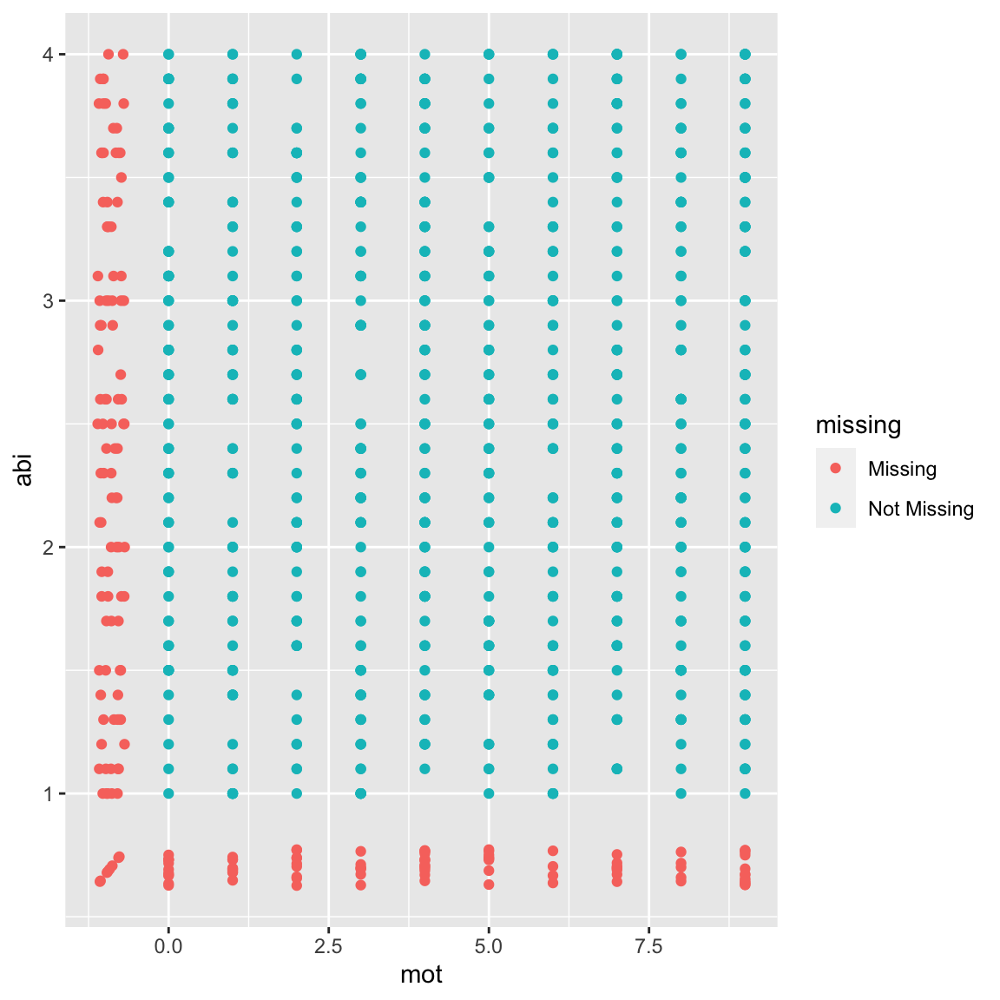
So kann man ganz leicht sehen, ob die missings sich eventuell bei einer bestimmten Kombinatione häufen.
Alternativ kann man auch noch die Funktionen gg_miss_var() und gg_miss_fct() nutzen.
Mit der Funktion gg_miss_var() wird die Anzahl der missings dargestellt. Mit dem Argument facet kann man dies auch auf einzelne Ausprägungen runterbrechen. So kann man sehen, ob evtl. eine Gruppe deutlich mehr missings aufweist, als eine andere Gruppe.
gg_miss_var(uniMis,
facet = study) Mit der Funktion
Mit der Funktion gg_miss_fct() können missings visuell sehr schön aufbereitet werden.
gg_miss_fct(x = uniMis,
fct = study)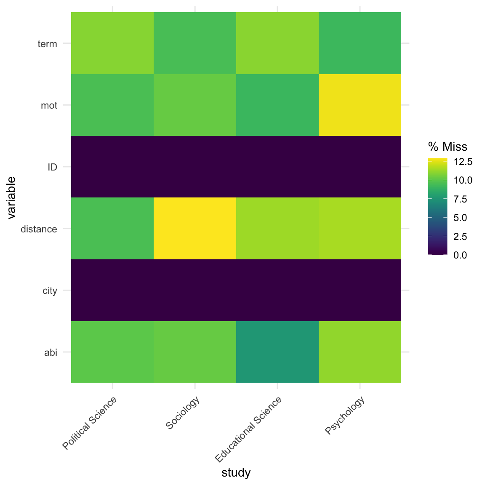 Auch das kann man sich wieder nach Ausprägungen auf einer weiteren Variable ausgeben lassen, um zu sehen, ob es starke Gruppenunterschiede gibt:
gg_miss_fct(x = uniMis,
fct = study) +
labs(title = "NA in Uni-df nach Studienfach")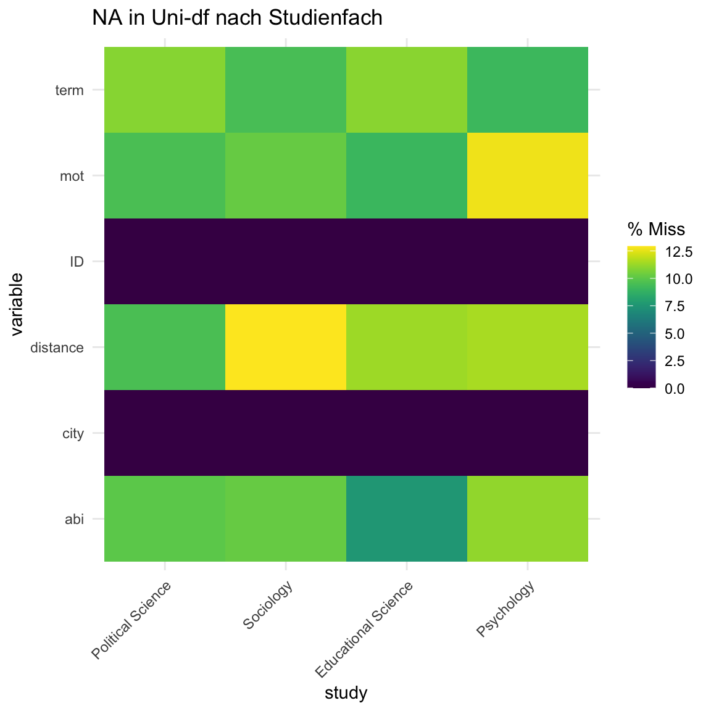
Darstellungen von Regressionsmodellen
Oftmals ist es nicht nur das Ziel Regressionsmodelle in Tabellen darzustellen, sondern auch spezifische Effekte grafisch darzustellen. Dazu stellen wir hier eine Möglichkeit vor: manuell über eigene predictions.
Es gibt zwar packages wie ggiraphExtra, diese können aber nur sehr eingeschränkt plotten.
Bevor wir nun verschiedene lineare Modelle berechnen, berechnen wir ein paar Modelle.
model1 <- lm(trstprl ~ 1 + trstprt,
pss)
model2 <- lm(trstprl ~ 1 + trstprt + agea + stfdem,
pss)
model3 <- lm(trstprl ~ 1 + trstprt + agea + stfdem + district,
pss)Im bivariaten Trainingsfall kann man ganz einfach ggplot und die Funktion stat_smooth() verwenden (model1):
ggplot(pss,
aes(x = trstprt, y = trstprl)) +
geom_jitter(color = "darkblue") + # observations
stat_smooth(method = "lm", # regression line
color = "tomato") +
labs(title = "Regression trstprl on trstprt", # titles
x = "Trust in Parties",
y = "Trust in Parliament")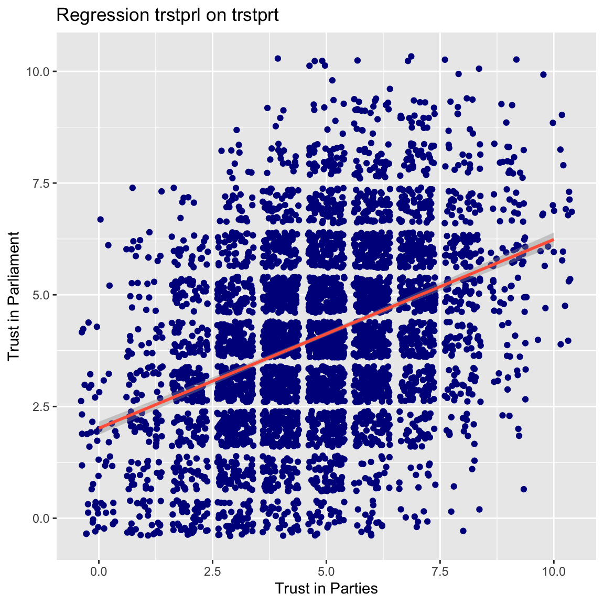
Sobald wir aber ein multivariates Modell haben, ist dies nicht mehr direkt so möglich. Da wir die anderen Effekte konstanthalten müssen, um die Abbildung korrekt darzustellen. Aber es ist immer noch leicht umzusetzen, sobald man versteht, was Konstanthalten bedeutet.
Wir möchten den Effekt von trstprt auf trstprl plotten, im model2 haben wir aber zusätzlich noch die Variable agea und stfdem. Daher ist dieser Effekt immer mit den weiteren Effekten zu interpretieren. Um den Effekt plotten zu können, halten wir den (oder die) weiteren Effekt(e) konstant.
Daher bilden wir nun eine neue Matrix (Schätzungs-Datensatz). Diese beinhaltet am Ende die Vorhersage unseres Schätzmodells. Zuvor müssen wir aber fiktive Werte der zwei Variablen generieren. Wir möchten den Effekt von trstprt plotten, daher halten wir agea und stfdem konstant (bei metrischen Variablen oftmals der mean). Mit der Funktion list() schaffen wir eine Liste mit drei Objekten (trstprt, agea und stfdem). Die Funktion expand.grid() macht aus dieser liste dann ein data frame:
fakeDf <- expand.grid(list(trstprt = seq(0,
10,
1),
agea = mean(pss$agea, na.rm = TRUE),
stfdem = mean(pss$stfdem, na.rm = TRUE)))
fakeDfAnschließend wenden wir das lineare Modell auf diese Daten an:
predFakeDf <- predict(model2,
newdata = fakeDf, # der fiktive Datensatz
se = TRUE) Das Objekt ist eine Liste, die
fit(fitted values),se.fit(standard errors),df(degrees of freedom) undresidual.scale(residual standard deviation) beinhaltet.Wir sind an den ersten beiden Werten interessiert, die wir für das Plotten benötigen. Diese Werte binden wir im nächsten Schritt nun an die Anfangsmatrix.
Jetzt übertragen wir die vorhergesagten Werte an die geschaffene Datenmatrix.
fakeDf$pred <- predFakeDf$fit
fakeDf$pred_se <- predFakeDf$se.fitNun können wir den Plot erstellen, wir haben alle Werte in einem Datenobjekt:
ggplot(fakeDf,
aes(x = trstprt,
y = pred)) +
geom_line(color = "darkgreen") +
geom_line(data = fakeDf,
aes(x = trstprt,
y = pred - 1.96 * pred_se),
linetype = 3) +
geom_line(data = fakeDf,
aes(x = trstprt,
y = pred + 1.96 * pred_se),
linetype = 3) +
labs(title = "Linear relationship between trstprl and trstprt (others constant)",
y = "Predicted value of Trust in Parliament",
x = "Trust in Parties") 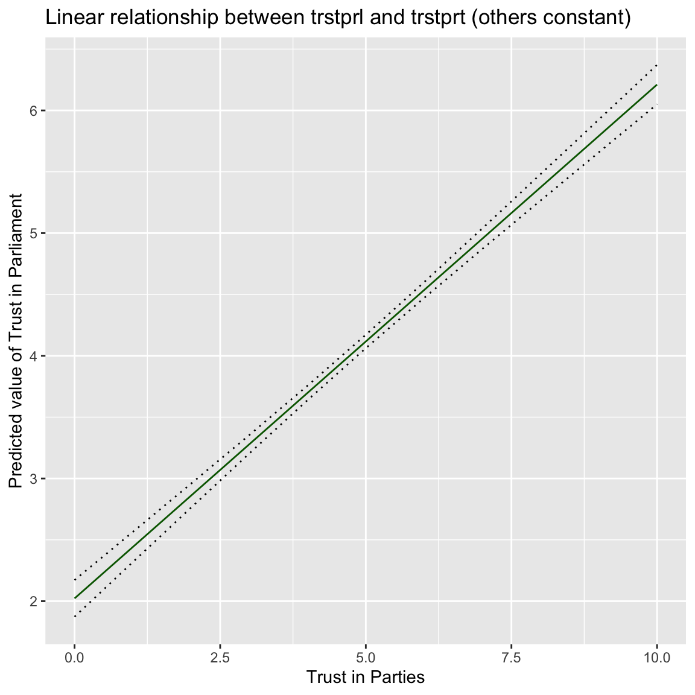
Als nächstes fahren wir genauso fort mit model3. Hier haben wir allerdings eine kategorielle Variable (district) und diese lässt sich nicht konstant halten. Daher machen wir so viele fake-Datensätze wie es Ausprägungen auf der Variable gibt: also 5. Diese fügen wir dann zusammen. Beginnen wir mit dem Distrikt 1 Datensatz:
fakeDfD1 <- expand.grid(list(trstprt = seq(0,
10,
1),
agea = mean(pss$agea, na.rm = TRUE),
stfdem = mean(pss$stfdem, na.rm = TRUE),
district = "Distrikt 1"))
fakeDfD2 <- expand.grid(list(trstprt = seq(0,
10,
1),
agea = mean(pss$agea, na.rm = TRUE),
stfdem = mean(pss$stfdem, na.rm = TRUE),
district = "Distrikt 5"))
fakeDfD3 <- expand.grid(list(trstprt = seq(0,
10,
1),
agea = mean(pss$agea, na.rm = TRUE),
stfdem = mean(pss$stfdem, na.rm = TRUE),
district = "Distrikt 7"))
fakeDfD4 <- expand.grid(list(trstprt = seq(0,
10,
1),
agea = mean(pss$agea, na.rm = TRUE),
stfdem = mean(pss$stfdem, na.rm = TRUE),
district = "Distrikt 10"))
fakeDfD5 <- expand.grid(list(trstprt = seq(0,
10,
1),
agea = mean(pss$agea, na.rm = TRUE),
stfdem = mean(pss$stfdem, na.rm = TRUE),
district = "Distrikt 12")) Jetzt fügen wir diese Datensätze erst in einem Datensatz zusammen, da wir ansonsten mit dem Vorgehen wie oben unnötig weitere Objekte erstellen würden. Und anschließend schätzen wir die Werte von trstprl:
fakeDfbyDistrict <- rbind(fakeDfD1,
fakeDfD2,
fakeDfD3,
fakeDfD4,
fakeDfD5)
predFakeDfbyDistrict <- predict(model3,
newdata = fakeDfbyDistrict, # der fiktive Datensatz
se = TRUE)
fakeDfbyDistrict$pred <- predFakeDfbyDistrict$fit
fakeDfbyDistrict$pred_se <- predFakeDfbyDistrict$se.fitAnschließend können wir das ganze dann mit ggplot plotten:
ggplot(fakeDfbyDistrict,
aes(x = trstprt,
y = pred,
color = district,
shape = district
)) +
geom_line() +
ylab("Predicted value of Trust in Parliament") +
xlab("Trust in Parties") +
labs(title = "Linear relationship between trstprl and trstprt (others constant)",
color = "Distrikte") 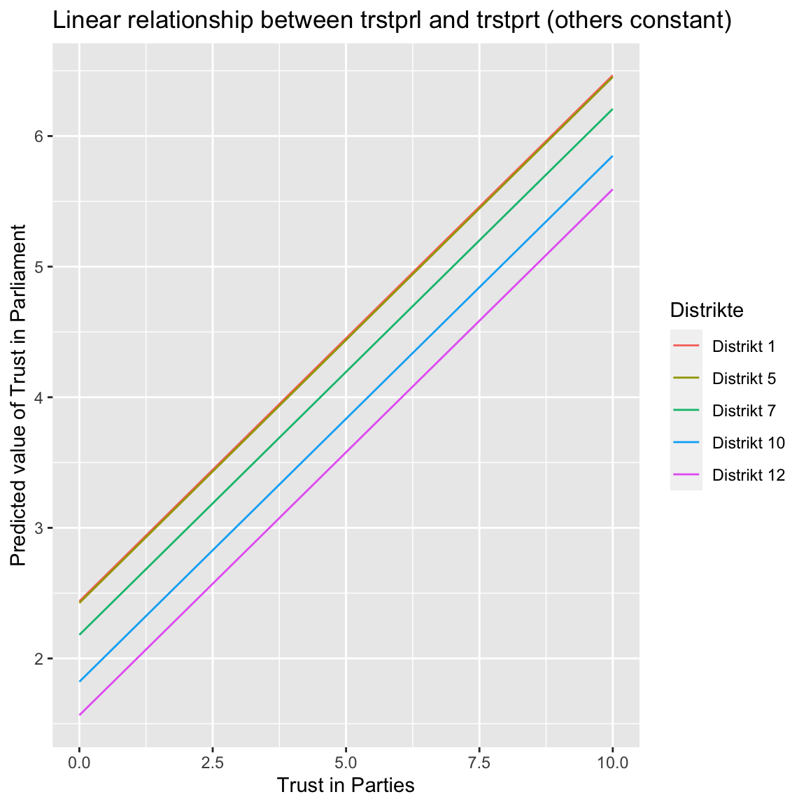 Somit haben wir die Regressionslinie zwischen trstprl und trstprt unter Konstanthalten von Alter, Zufriedenheit mit der Demokratie für Personen nach Distrikten dargestellt.
Oftmals möchte man aber eine Linie besonders hervorheben und zum Beispiel die Datenpunkte des hervorgehobenen Distrikts einzeichnen. Prüfe den Code zu dem vorherigen und überlege, was an welchen Stellen geändert wurde!
fakeDistrict12 <- fakeDfbyDistrict %>%
filter(district == "Distrikt 12") %>%
select(-district)
district12 <- pss %>%
filter(district == "Distrikt 12") %>%
select(-district)
ggplot(fakeDistrict12,
aes(x = trstprt,
y = pred
)) +
geom_line(color = "tomato") +
geom_point(data = district12,
aes(y = trstprl),
color = "tomato",
position = "jitter",
size = 0.7,
alpha = 0.5) +
ylab("Predicted value of Trust in Parliament") +
xlab("Trust in Parties") +
labs(title = "Linear relationship between trstprl and trstprt (others constant)",
lty = "Distrikte",
caption = "Highlighted District 12.")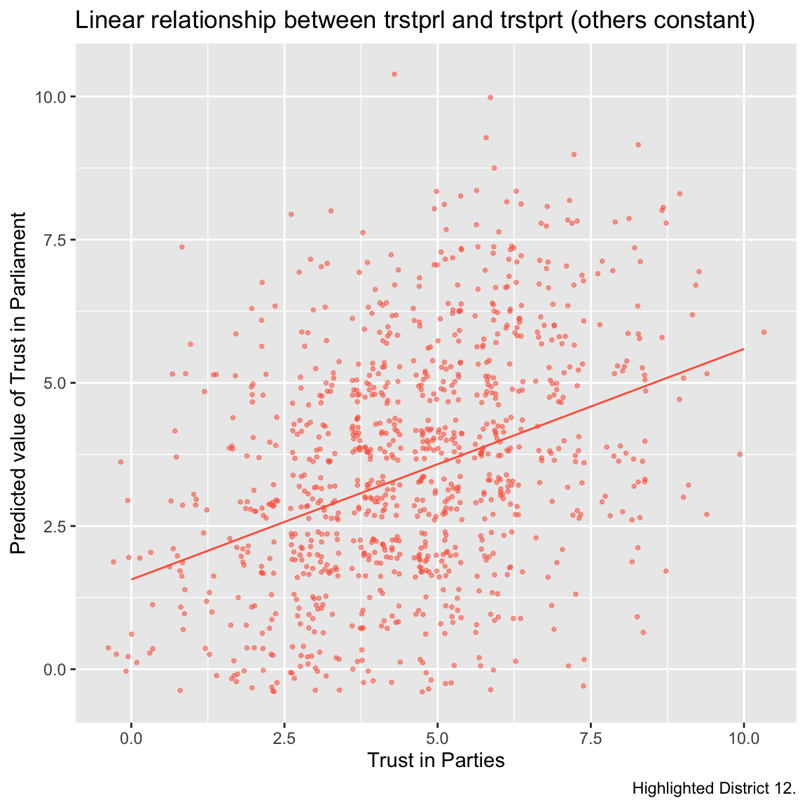
Wir könnten zusätzlich auch noch die anderen Datenpunkte in das Bild einfügen. Man sollte aber immer aufpassen, dass ein Plot nicht zu unübersichtlich wird.
districts <- pss %>%
filter(district != "Distrikt 12") %>%
select(-district)
ggplot(fakeDistrict12,
aes(x = trstprt,
y = pred
)) +
geom_line(color = "tomato") +
geom_point(data = district12,
aes(y = trstprl),
color = "tomato",
position = "jitter",
size = 0.7,
alpha = 0.85) +
geom_point(data = districts,
aes(y = trstprl),
color = "darkgray",
position = "jitter",
size = 0.7,
alpha = 0.3) +
ylab("Predicted value of Trust in Parliament") +
xlab("Trust in Parties") +
labs(title = "Linear relationship between trstprl and trstprt (others constant)",
lty = "Distrikte",
caption = "Highlighted District 12.") +
scale_color_manual(values = c("darkgray", "darkgray", "darkgray", "darkgray", "tomato")) +
guides(color = "none")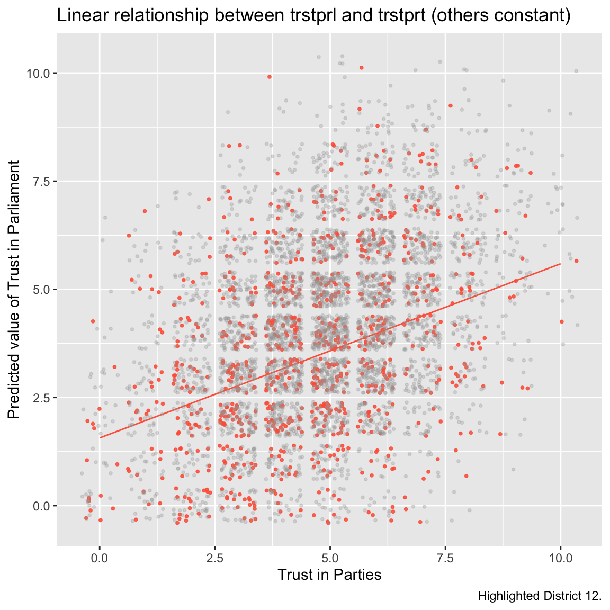
Koeffizienten darstellen
Wenn wir aber das Modell grafisch darstellen wollen, also die Koeffizienten (anstatt oder zusätzlich zu einer Tabelle), hilft das package dotwhisker. Mithilfe dieses packages können Objekte aus lm()-Funktionen direkt geplottet werden.
Zuerst installieren und laden wir das Paket:
install.packages("dotwhisker")
library("dotwhisker")Anschließend ruft man die Funktion dwplot() auf, die die Koeffizienten grafisch darstellt. Dies ist ebenfalls ein ggplot, so dass man es im Anschluss beliebig bearbeiten kann.
dwplot(model3)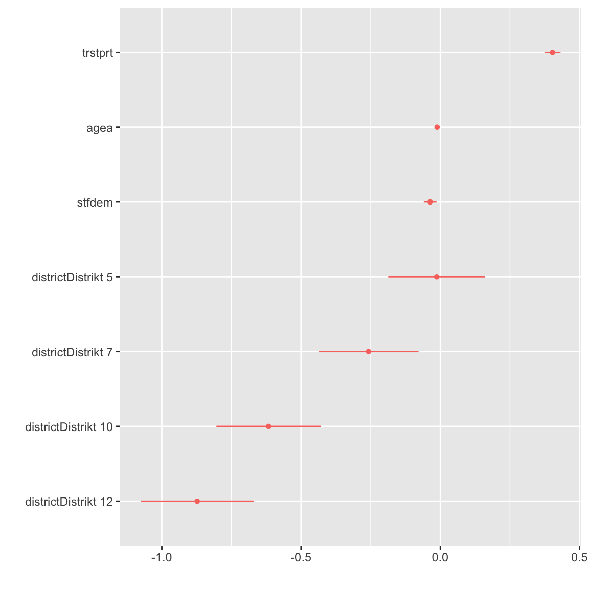
Das sieht noch etwas unschön aus und wir bearbeiten dies nun in ggplot: Wir fügen bei 0 eine Linie ein (Signifikanz), wir ändern die Achsenbeschriftung auf der y-Achese und wir ändern die Skala auf der x-Achse und fügen Titel ein.
dwplot(model3) +
geom_vline(xintercept = 0,
linetype = "dashed") +
scale_y_discrete(labels = rev(c("Trust Parties",
"Age",
"Satisfaction w/ Democracy",
"District 5",
"District 7",
"District 10",
"District 12"
))) +
scale_x_continuous(breaks = seq(-2, 1 , 0.2)) +
labs(title = "Lin. Regression on Trust in Parliament (ref: District 1)",
caption = "Data: Panem Social Survey.")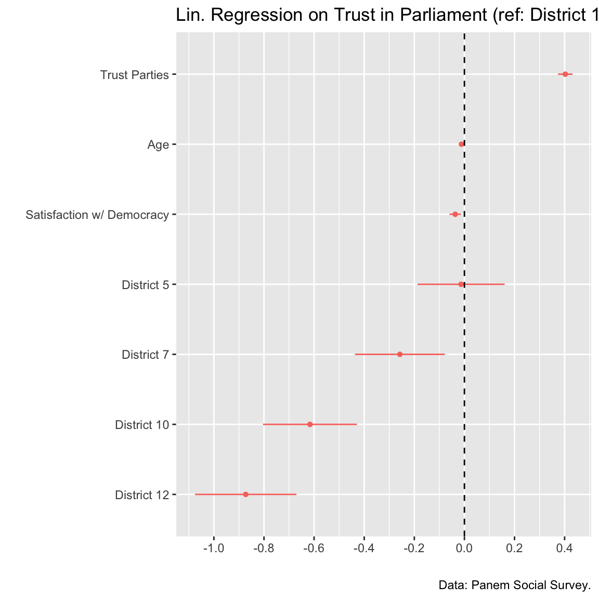 ## Labs 1. Prediciton machen und korrekte Werte mit eintragen. 2. Lineare Regression mit Income als group-Variablen und prediction darstellen
Copyright: 
Benedikt Philipp Kleer, Justus-Liebig-Universität Gießen.